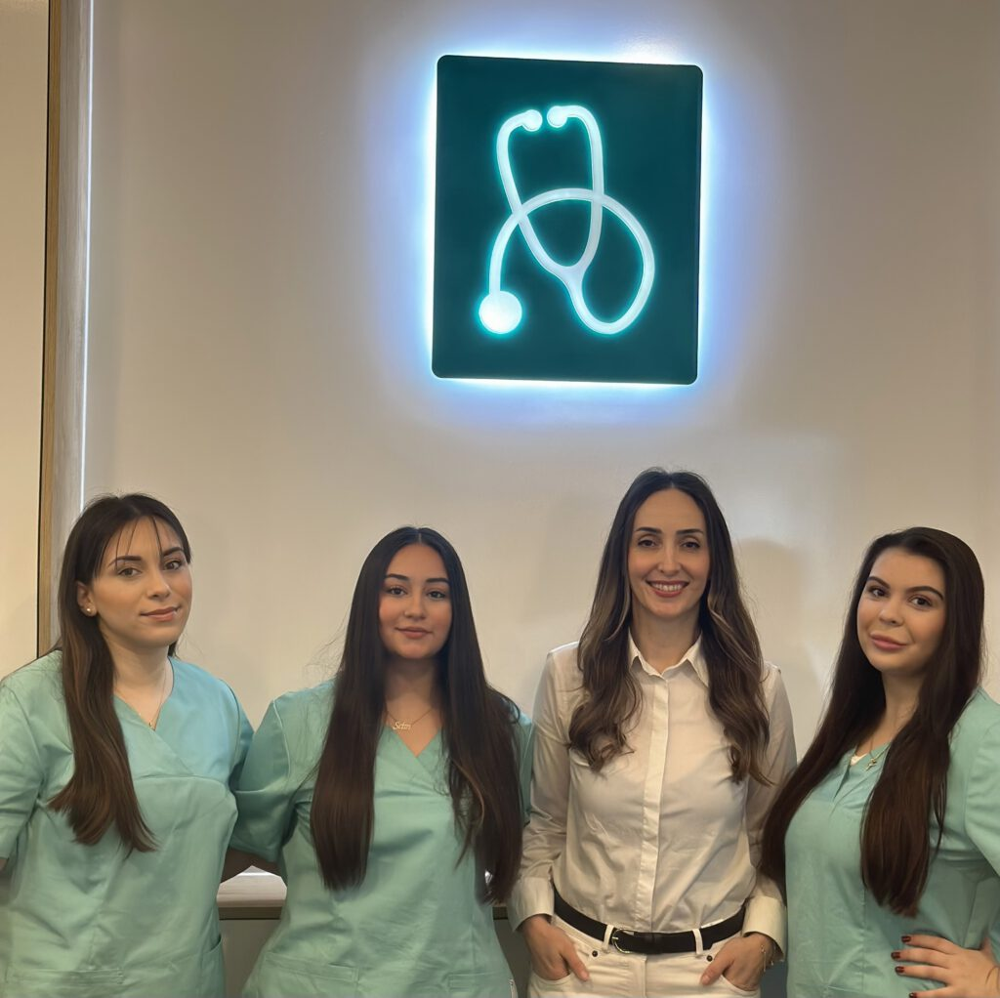
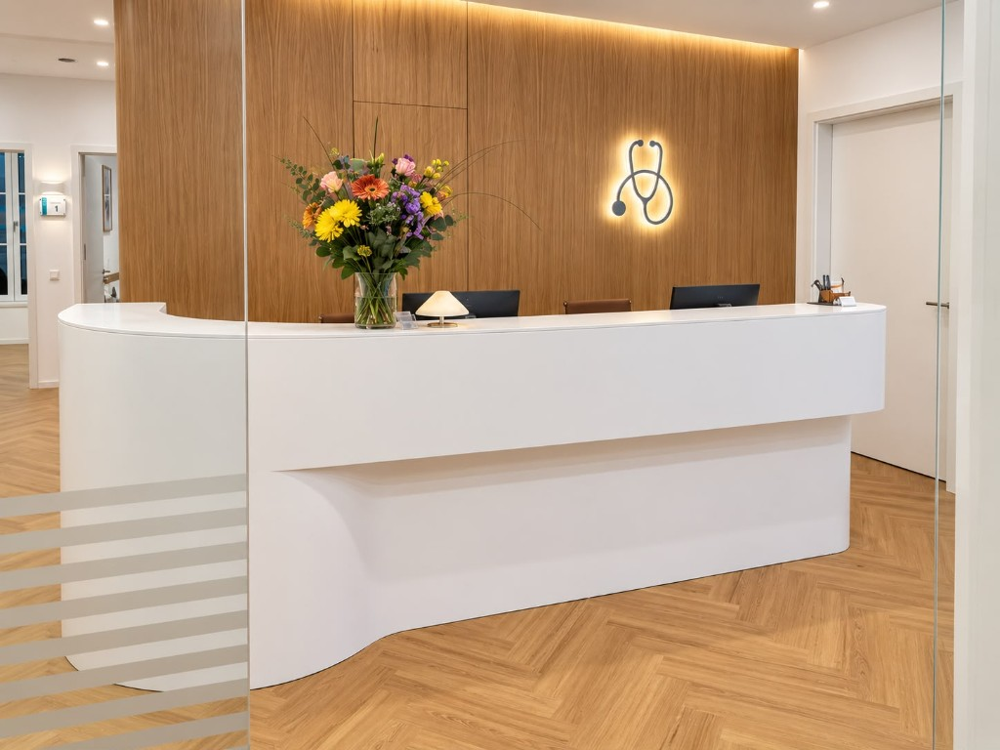
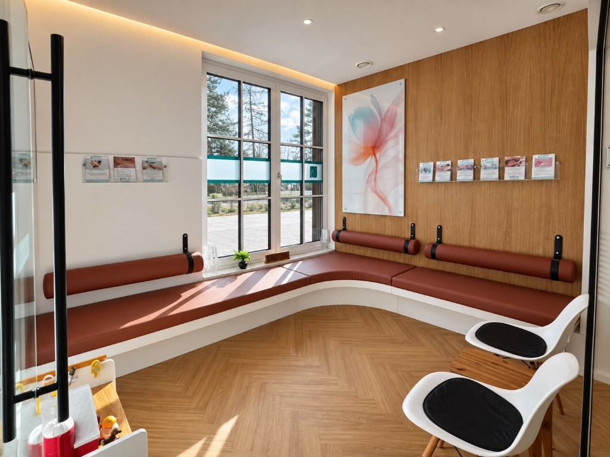
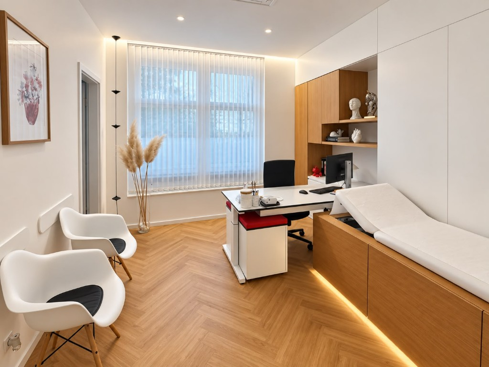
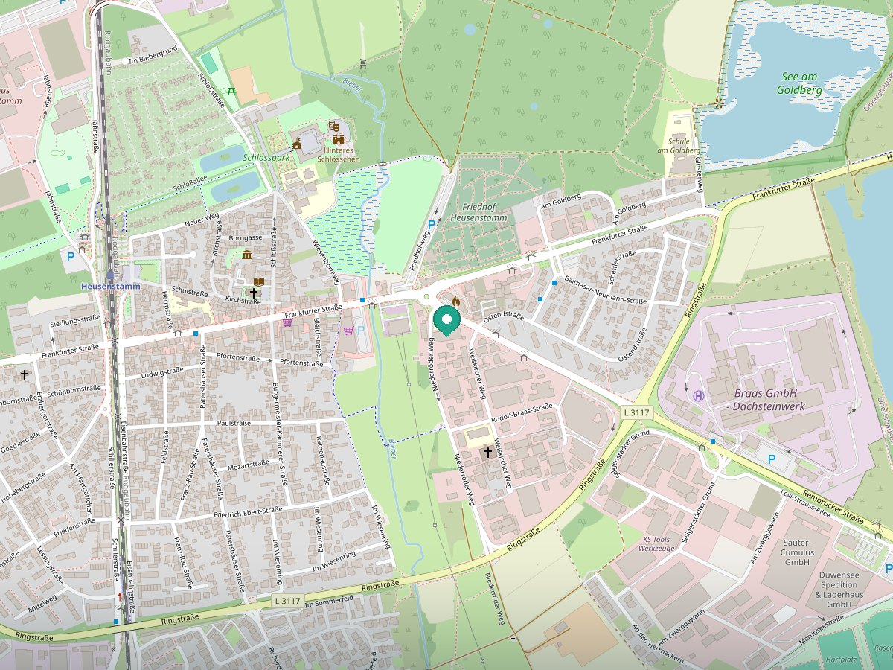

Hausärztliche Betreuung
Ihre erste Anlaufstelle bei akuten Beschwerden und langfristigen gesundheitlichen Fragen.
Wir begleiten Sie persönlich und individuell, mit moderner internistischer Diagnostik, verlässlicher hausärztlicher Betreuung und einem offenen Ohr für Ihre Gesundheit.

Wir verbinden persönliche Zuwendung mit medizinischer Qualität. Regelmäßige Fortbildungen und die enge Zusammenarbeit mit Fachärztinnen und Fachärzten bilden die Grundlage unserer Versorgung.



Ihre erste Anlaufstelle bei akuten Beschwerden und langfristigen gesundheitlichen Fragen.
Internistische Kompetenz für eine sorgfältige Einordnung Ihrer Beschwerden und Befunde.
Individuelle Beratung und vorbeugende Medizin mit Blick auf Ihre persönliche Situation.
Kontinuierliche Betreuung bei chronischen Erkrankungen und regelmäßige Verlaufskontrollen.
Bei Bedarf stimmen wir weitere fachärztliche Diagnostik und Behandlungsschritte mit Ihnen ab.
Unsere Praxis nimmt an der hausarztzentrierten Versorgung teil. Sprechen Sie uns gern darauf an.
Die Praxisräume sind großzügig dimensioniert und vollständig schwellenfrei, auch für Menschen mit Rollstuhl und Familien mit Kinderwagen.
Buchen Sie Ihren Termin online oder rufen Sie unser Praxisteam an. Rezeptwünsche können Sie über das separate Rezepttelefon mitteilen.

Kartendaten © OpenStreetMap-Mitwirkende